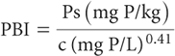
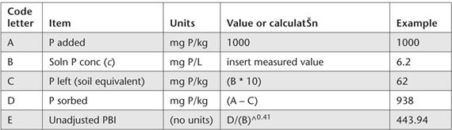

This method is identical to Method 9I2a and Method 9I3a, except that Colwell-P and Olsen-P values, respectively, are not included in the calculation of PBI. The relevant equation is shown below and explained in more detail in Table 9.9 of Note 1.

where:
Table 9.9. Data and calculatŠns required to calculate PBIunadj.

Ps = freshly sorbed Pl (mg P/kg); and
c = final solution P concentration (mg P/L)
Report unadjusted PBI (PBIunadj) on an air-dry (40°C) basis.
1. Calculations can be conveniently performed on a computer spreadsheet. Guidance is provided in Table 9.9.